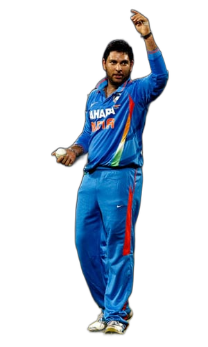
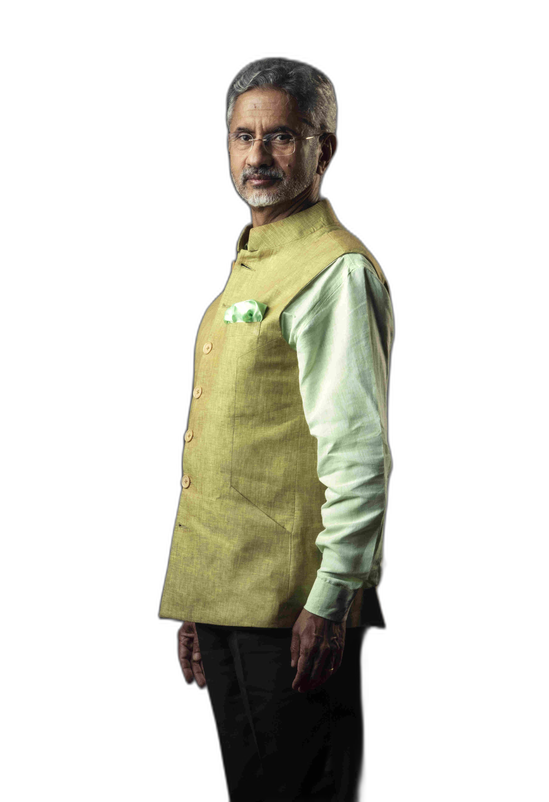
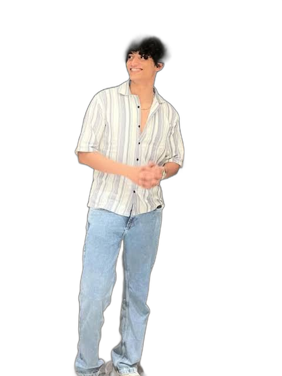

NEW INITIATIVES
Building stronger systems, stronger value, and stronger opportunities for URJA
Centralised Brand Partnership Channel
Establish an official WhatsApp brand liaison group and structured communication channel for more professional, coordinated sponsorships.
URJA Tech Studio
Create a tech wing that takes up selective freelance projects, strengthens manpower, and provides real-world exposure to members.
Digital Identity Upgrade
Revamp the website into an immersive one-stop platform for members, brands, and collaborators.
URJA Learning Cohort
Launch mentorship cohorts and olympiads with nominal fees, live sessions, and certification.
Member Growth & Live Exposure Program
Build member skills through webinars, NGO tie-ups, and live projects that go beyond society work.
ACHIEVER UNITED
Our biggest stage yet — where industry icons, innovators, and achievers converge. We are building the guest list.


